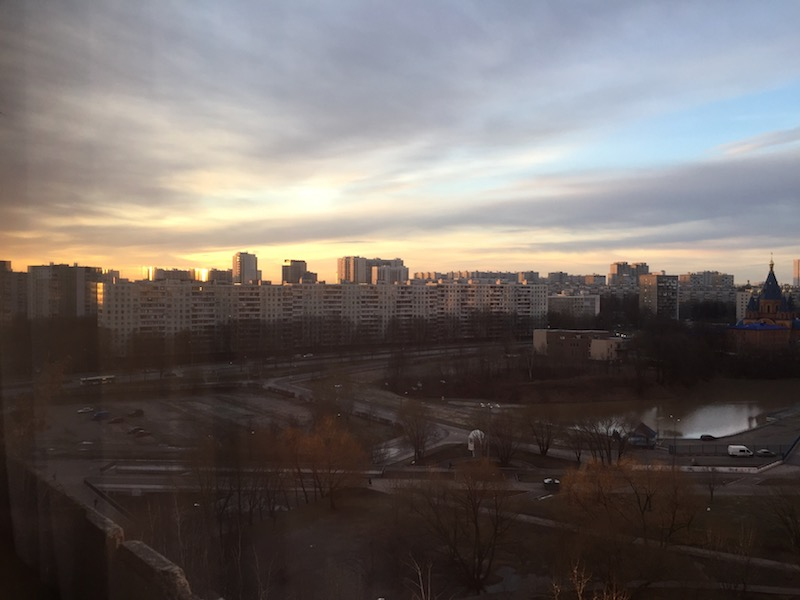
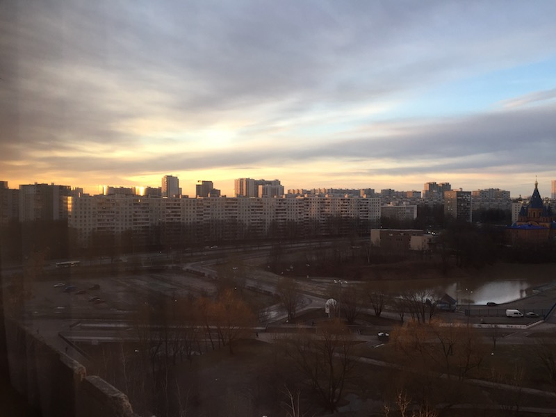
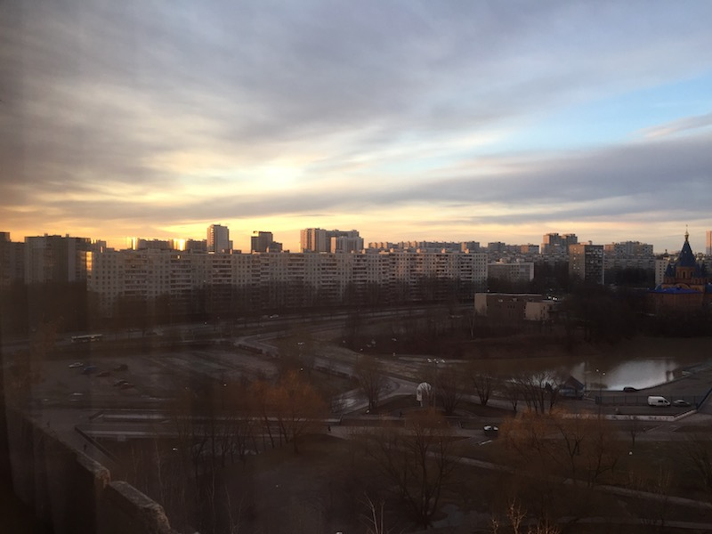

Title
Use the navbar-btn class on a button to vertically align (same padding as links) it inside the navbar.
 

Use the navbar-btn class on a button to vertically align (same padding as links) it inside the navbar.
